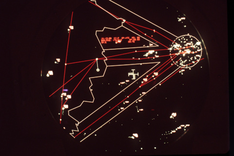

TP2-ARCH-05 : Sécurité dans le traffic aérien
Contents

TP2-ARCH-05 : Sécurité dans le traffic aérien#
Objectifs pédagogiques#
comprendre ce qu’est un protocole on demand ou broadcast
déduire l’architecture du système de surveillance du traffic aérien
Afficher les différents aéronefs équipés ADS-B autour du gymnase en temps réel
Instruments et capteurs physiques d’un aéronef#
Un aéronef (un avion, un hélicoptère, un dirigeable, etc..) est équipé d’un grand nombre de capteurs :
Instrument |
Fonction |
|---|---|
Horizon artificiel (gyroscope) |
Indique l’attitude de l’avion (inclinaison en roulis et en tangage) par rapport à l’horizon. |
Altimètre |
Mesure l’altitude par rapport au niveau de la mer à l’aide de la pression atmosphérique. |
Anémomètre (indicateur de vitesse) |
Mesure la vitesse de l’avion par rapport à l’air ambiant (vitesse indiquée ou IAS). |
Variomètre (ou VSI - Vertical Speed Indicator) |
Indique la vitesse ascensionnelle ou de descente de l’avion (en pieds/minute). |
Compas magnétique |
Indique le cap magnétique suivi par l’avion. |
Indicateur de cap (ou gyroscope directionnel) |
Permet un cap stable sans perturbations magnétiques. |
Turn coordinator |
Montre la vitesse de virage et la coordination entre le roulis et le lacet. |
GPS (Global Positioning System) |
Fournit la position précise (latitude, longitude, altitude), la vitesse sol et le cap réel. |
VOR/DME |
Radio-navigation utilisant des balises au sol pour le guidage sur routes aériennes. |
ADF (Automatic Direction Finder) |
Oriente l’avion vers une balise NDB (radio à basse fréquence). |
ILS (Instrument Landing System) |
Aide à l’atterrissage de précision (guidage vertical et horizontal). |
A ces instruments, on ajoute (pour les aéronefs récents), des systèmes électroniques :
Système |
Fonction |
|---|---|
ADS-B (Automatic Dependent Surveillance - Broadcast) |
Émet et reçoit des données de position, vitesse et altitude via GPS (utilisé par les contrôleurs et autres avions). |
Inertial Measurement Unit (IMU) |
Utilise accéléromètres et gyroscopes pour estimer les mouvements (souvent couplé avec GPS). |
FMS (Flight Management System) |
Gère les routes de vol, consommation de carburant, calculs de performance. |
TCAS (Traffic Collision Avoidance System) |
Avertit le pilote d’un risque de collision avec un autre aéronef. |
Radar météorologique embarqué |
Permet de détecter les orages et zones de turbulence à distance. |
tous les paramètres sont enregistrés à intervalles réguliers notamment dans l’une des deux boîtes noires de l’appareil. Certaines de ces informations sont en outre transmises chaque seconde environ en mode broadcast, c’est-à-dire diffusion.
Le protocole ADS-B#
Les données contenues dans un message ADS-B (transmis chaque seconde) sont :
Donnée dans le message ADS-B |
Source à bord |
|---|---|
Position (lat, long) |
GPS ou GNSS (couplé parfois à une IMU) |
Altitude barométrique |
Altimètre (via pression statique) |
Altitude GNSS |
GPS |
Vitesse sol (ground speed) |
GPS ou FMS |
Cap (track angle) |
Compas gyro ou GPS |
Vertical rate (taux de montée/descente) |
Variomètre / capteurs barométriques |
Identifiant de l’aéronef |
Transpondeur Mode S / avionique |
Code transpondeur (squawk) |
Transpondeur (piloté par ATC ou pilote) |
Statut système |
Avionique (statut du transpondeur, TCAS actif, etc.) |
Le protocole ADS-B (pour Automatic dependent surveillance-broadcast) permet de contrôler l’espace aérien. C’est l’un des outils (parmi plusieurs autres) utilisés pour la sécurité du traffic aérien.
Les stations au sol peuvent ensuite capter ces messages et reconstruire la trajectoire d’un aéronef donné.
Structure d’un message ADS-B#
Un message ADS-B a la forme suivante :
Élément transmis |
Exemple |
Explication |
|---|---|---|
Adresse ICAO |
|
Numéro unique de l’avion (comme une plaque) |
Type de message |
|
Définit les données transmises par l’aéronef |
Appel radio (Callsign) |
|
Le nom du vol (Air France 007) |
Altitude |
|
Hauteur à laquelle vole l’avion |
Position |
|
Latitude et longitude (GPS) |
Vitesse sol |
|
Vitesse réelle de déplacement |
Cap (track) |
|
Direction de l’avion |
Taux de montée/descente |
|
Montée ou descente |
Un message brut sera transmis de la façon suivante :
8DA9C3F2201A0A3F8B096527B6F0
qui est une suite de bits codés ici en hexadécimal
Type de message (typecode)#
Le type de message, ou typecode, dans un message ADS-B est un nombre compris entre 0 et 31. Il indique ce que contient le message, c’est-à-dire quel type d’information est transmis par l’avion à ce moment-là : parfois le nom du vol, parfois la position, parfois la vitesse, etc..
Typecode (TC) |
Signification du message |
Donnée transmise |
|---|---|---|
1 à 4 |
Identification de l’avion |
Callsign (ex : AFR007) |
5 à 8 |
Non utilisé ou réservé |
|
9 à 18 |
Position (surface ou en vol) |
Altitude, CPR (latitude/longitude) |
19 |
Vitesse et cap |
Vitesse sol, cap, taux de montée/descente |
20 à 22 |
Données supplémentaires de vitesse |
Moins utilisées |
23 à 31 |
Réservés ou non-ADS-B |
Souvent non pertinents pour usage civil |
Décodage d’un message ADS-B#
Il suffit de conaître la structure de la suite de bits codée en hexadécimal. Il est possible de le faire à la main mais nous préférerons utiliser une bibliothèque de fonctions (un module externe) qui le fait tout seul : pyModeS
import pyModeS as pms
# 🔢 Exemple de message ADS-B hexadécimal
message = "8DA9C3F2201A0A3F8B096527B6F0" # à remplacer par un message réel
print("Message ADS-B reçu :", message)
# 1️⃣ Adresse ICAO de l’avion (code unique de 24 bits)
icao = pms.common.icao(message)
print("Adresse ICAO :", icao, "→ identifiant unique de l'avion")
# 2️⃣ Type de message : cela détermine le contenu (position, vitesse, etc.)
tc = pms.adsb.typecode(message)
print("Typecode :", tc)
# 3️⃣ Décodage selon le type de message
if 1 <= tc <= 4:
# ✈️ Identification de vol (callsign)
callsign = pms.adsb.callsign(message)
print("Appel radio (Callsign) :", callsign)
elif 9 <= tc <= 18:
# 📍 Position (partielle) et altitude
altitude = pms.adsb.altitude(message)
cpr_format = pms.adsb.cpr_format(message)
print("Altitude :", altitude, "ft")
print("Format CPR :", "pair" if cpr_format == 0 else "impair")
print("⚠️ Pour obtenir la position complète, il faut un second message (CPR pair + impair)")
elif 19 <= tc <= 22:
# 🚀 Vitesse et cap
speed, heading, vrate = pms.adsb.velocity(message)
print("Vitesse sol :", speed, "nœuds")
print("Cap :", heading, "°")
print("Taux de montée/descente :", vrate, "ft/min")
else:
print("Message non pris en charge dans cette démo simple.")
Message ADS-B reçu : 8DA9C3F2201A0A3F8B096527B6F0
Adresse ICAO : A9C3F2 → identifiant unique de l'avion
Typecode : 4
Appel radio (Callsign) : F_0
Utilisation des messages ADS-B#
Elon Musk private jet#
Taylor Swift#
Sources#
The 1090 Megahertz Riddle (second edition) (site web)
SPHAiR (site web)
Cartes geo.admin ICAO (site web)
VFR Manual Skyguide (télécharger)
Taylor Swift private jets tracker (sur X (ex-Twitter))
Elon Musk jet tracker (sur X (ex-Twitter))
Mise en place du matériel#
🛠️ Pré-requis côté Raspberry Pi
Clé SDR (type RTL-SDR) branchée
Logiciel dump1090-fa installé avec une interface web (ou version classique dump1090)
Si ce n’est pas encore fait :
sudo apt update sudo apt install dump1090-fa
Puis lancer :
dump1090-fa –net
Cela lance un serveur web local sur le port 30003 et fournit un flux JSON en temps réel via :
http://localhost:8080/data/aircraft.json
🐍 Code Python : récupérer et filtrer les avions depuis le flux JSON
import urllib.request import json import time
Coordonnées du lycée (rectangle géographique à ajuster selon votre position réelle)#
LAT_MIN = 48.850 LAT_MAX = 48.860 LON_MIN = 2.350 LON_MAX = 2.360
URL = “http://localhost:8080/data/aircraft.json”
def est_dans_zone(lat, lon): return LAT_MIN <= lat <= LAT_MAX and LON_MIN <= lon <= LON_MAX
while True: try: # Récupère les données JSON with urllib.request.urlopen(URL) as response: data = json.loads(response.read())
avions = data.get("aircraft", [])
print("\nAvions détectés au-dessus du lycée :")
count = 0
for avion in avions:
lat = avion.get("lat")
lon = avion.get("lon")
flight = avion.get("flight", "").strip()
alt = avion.get("alt_geom", 0)
speed = avion.get("gs", 0)
if lat is not None and lon is not None and est_dans_zone(lat, lon):
count += 1
print(f"Vol {flight} | Altitude : {alt} m | Vitesse : {speed} km/h")
print(f"Total au-dessus du lycée : {count} avion(s)")
time.sleep(10) # Attend 10 secondes avant la prochaine lecture
except Exception as e:
print("Erreur lors de la récupération :", e)
time.sleep(5)
🧪 Fonctionnement
Le script lit le flux JSON fourni par dump1090.
Il filtre les avions selon leur position géographique.
Il affiche le nombre d’avions au-dessus d'une zone définie autour du lycée.
Il se met à jour toutes les 10 secondes.
🧯 Sécurité & débogage
Vérifie que dump1090-fa est bien en marche (test avec un navigateur sur http://localhost:8080/data/aircraft.json).
Adapte l’adresse IP si tu accèdes au Raspberry Pi à distance (remplace "localhost" par l'IP réelle du Pi).